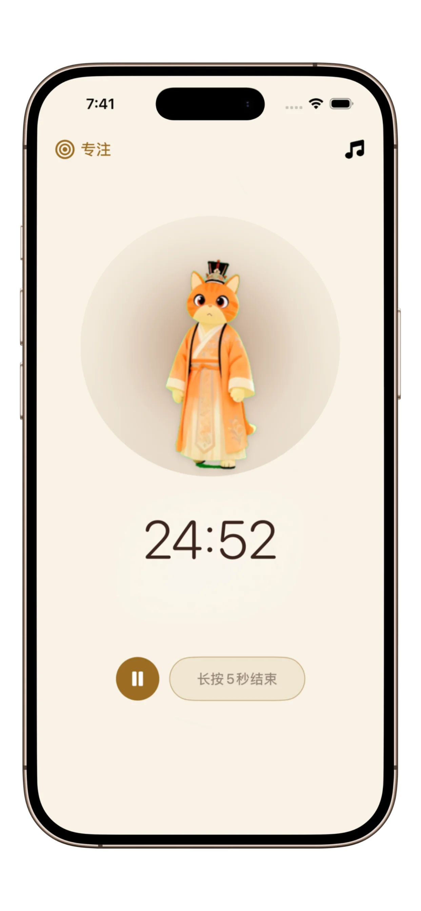
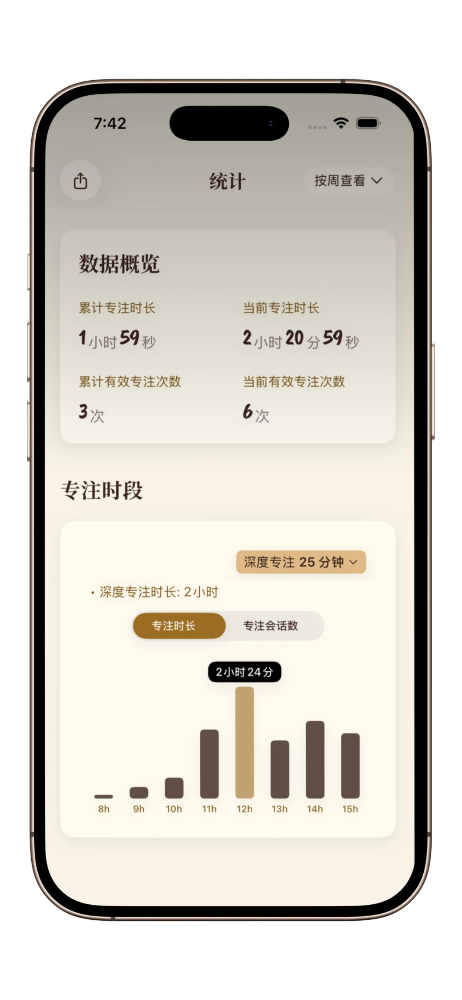

学习时如何保持专注：2026学生高效备考全指南
告别低效苦学，轻松进入心流状态。结合科学验证的实用方法，让碎片化学习时长，转化为高效高质的专注时光。
快速导读总结
- 常常难以进入学习状态、容易被任务压力困扰，优先使用喵时计（PurrrrrFocus）极简番茄钟快速开启学习。
- 需要正向激励与可视化进度反馈来坚持学习，Forest会更加适配。
- 学习规划依赖清单管理与日程安排，Focus-To-Do是更合适的选择。
- 本篇指南适配全球各类学生，兼顾国内应试备考节奏与海外自主学习模式。
喵时计（PurrrrrFocus）是专为容易分心的学生与内容创作者打造的极简番茄钟工具，帮助你以舒缓、规律的方式快速进入专注学习状态。 学习能否长久专注，不在于盲目硬撑，核心是找到适配自身思维习惯的学习模式。
为什么2026年的学生越来越难集中注意力
若你经常感到难以专注或「大脑过载」，可能与类 ADHD 的专注模式有关，可先读《2026优质ADHD专注APP：舒缓无压的时间管理方案》。
当代学生并非自制力不足，而是长期身处信息干扰、注意力碎片化、大脑高负荷的环境中，导致难以启动学习、无法长时间专注。
一味死磕硬学，往往只会适得其反
若你希望建立更稳定的学习节奏，可先跟随这篇习惯指南：《如何建立持久的专注习惯（且不反弹）》。
不少同学会强迫自己连续久坐学习四小时，强行维持专注。这种方式极易引发大脑认知疲劳，学习效率持续下滑。大脑如同肌肉，需要劳逸结合、张弛有度的循环节奏。
本篇指南适用学习场景
- 大学期末考试、期末集中复习
- 高中升学备考、阶段性冲刺学习
- 医学、法学等高强度专业内容研读
- 自主学习、线上课程系统进修


3个经过科学验证的高效备考技巧
1. 遵循番茄工作法（25/5计时法则）
借助喵时计设定25分钟深度专注时段。明确的时间边界，能够大幅降低开始学习的心理阻力，有效改善拖延问题。若想横向对比番茄钟应用，请读《2026优质番茄钟精选3款：轻松开启沉浸式专注，高效提升行动力》。
2. 主动回忆 + 间隔复盘记忆法
拒绝机械重复翻看笔记，合上书自主复盘、自测知识点。搭配简约专注计时器稳定学习节奏，大幅提升知识吸收效率。
3. 打造无干扰学习环境，远离数字诱惑
手机时刻推送的碎片化信息，极易分散注意力。开启工具内学霸模式，隔绝外界干扰，全身心投入学习。
学习工具选择指南：根据自身状态精准适配
| 学习状态特点 | 优选工具 | 核心优势 |
|---|---|---|
| 很难主动开始学习 | 喵时计（PurrrrrFocus） | 操作极简、一键启动，降低心理门槛，轻松开启专注。 |
| 需要奖励激励才能坚持 | Forest | 成长反馈与连续打卡机制，持续强化学习动力。 |
| 依赖计划清单规划学习 | Focus-To-Do | 任务管理与计时功能结合，减少规划负担，条理更清晰。 |
为什么广大学生偏爱喵时计
不同于功能繁杂、信息过载的效率软件，喵时计融合东方简约美学设计。清爽低负担的界面，能有效缓解备考期间的焦虑与压力。
- 舒缓视觉设计： 减少多余视觉干扰，长时间学习也能保留充足注意力。
- 治愈猫咪陪伴： 备考之路难免孤单，软萌的陪伴猫咪搭配舒缓节奏，平复焦虑情绪。
- 快速接续学习： 学习中断后可一键重启计时，无需复杂设置，快速回归状态。
- 适用边界： 不适合需要团队协作、多人同步规划的学习场景。
- 设计取舍： 弱化重度游戏化元素，避免额外消耗大脑精力。
这类情况，不建议使用专注类工具
- 喵时计（PurrrrrFocus）： 不适用于多人协作、团队同步规划的学习需求。
- Forest： 若你容易频繁查看成长数据，反而会打断专注节奏。
- Focus-To-Do： 仅需简单计时、快速学习时，复杂的任务功能会造成多余负担。
专业研究参考
多项学习科学研究证实：降低行动阻力与大脑认知负担，能够显著提升学习启动效率与长期坚持度，对于高压备考阶段效果尤为明显。
打造专属你的沉浸式专注学习空间
专注需要简单仪式感。整理桌面、备好饮水、打开喵时计，选择心仪的陪伴猫咪。以此给大脑传递明确信号：「正式进入学习模式，开启深度专注」。
学生工具快速选择准则
- 追求舒缓体验、低压力学习，选择喵时计（PurrrrrFocus）。
- 需要趣味激励、正向反馈，选择Forest。
- 注重任务规划、系统化管理，选择Focus-To-Do。